Broad component library
Work with resistors, capacitors, LEDs, RGB LEDs, diodes, transistors, potentiometers, switches, batteries, power supplies, motors, servos, breadboards, displays, buzzers, relays, and sensors.
VoltFlow brings components, code, simulation, connectivity, schematics, and PCB planning into one electronics design workspace for the next generation of IoT makers.
VoltFlow is TevrocSoft's electronics and IoT design platform for the space between a first idea and a buildable connected device. It helps makers, learners, engineers, and product teams see the circuit, write the behavior, and explain the design in one place.
IoT projects become difficult when hardware, firmware, and documentation live in separate places. VoltFlow keeps the important decisions visible together, from the first component to the behavior you want to test.
Work with resistors, capacitors, LEDs, RGB LEDs, diodes, transistors, potentiometers, switches, batteries, power supplies, motors, servos, breadboards, displays, buzzers, relays, and sensors.
Build around Arduino Uno, Nano, and Mega boards, ESP8266, ESP32, ATtiny85, or Raspberry Pi Pico targets with useful starter code.
Open a code editor from the circuit, import or export code, reset to a working sketch, and run the logic from the project surface.
Test pin behavior before hardware is connected. See active components and LEDs, react to switches and motion inputs, and evaluate ultrasonic thresholds.
Follow serial output from sketches, inspect project behavior in the debug console, and find logic or wiring problems earlier.
Move between the circuit, schematic view, and PCB view, then export JSON, JavaScript, CSV component data, images, and code files.
VoltFlow is more than a circuit canvas. Its inline code editor turns the project into a practical electronics IDE: choose a board, open its code beside the wiring, change the behavior, and run the result without losing the hardware context. For makers who want one place for circuit design, firmware, simulation, and connected-device thinking, VoltFlow is built to be the best all-in-one workspace in the workflow.
void setup() {
Serial.begin(9600);
pinMode(13, OUTPUT);
}
void loop() {
digitalWrite(13, HIGH);
Serial.println("LED ON");
delay(1000);
}
The component library stays close at hand, the canvas gives a design room to breathe, and tools for wiring, selection, zooming, saving, and debugging remain part of the working surface.
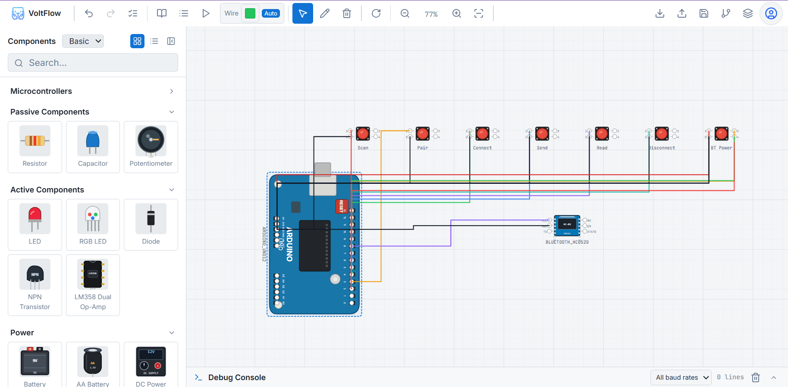
VoltFlow is useful at the point where an IoT concept needs to become understandable to more than one specialist. Hardware developers, firmware developers, founders, educators, and product teams can work from the same project reference.
Discover devices, connect to a target, send messages, and keep Bluetooth behavior close to the circuit project.
Explore GPS detection, device presence, position selection, and sending location data as part of a connected prototype.
Inspect SD-card files and connect storage ideas to the same microcontroller project instead of treating storage as an afterthought.
Save projects with metadata, components, wires, and code so experiments can become reusable references for the next build.
The IoT industry needs faster experimentation without losing clarity. VoltFlow brings the visual and technical sides of a prototype closer together.
Teams spend less time translating between whiteboards, breadboards, firmware notes, and disconnected simulators. A shared workspace helps validate an idea earlier.
A visual project gives engineers, educators, founders, and technical stakeholders a common reference for sensors, power, control logic, communications, and data movement.
Learners can see a component, connect it, attach code, run a behavior, and inspect output in one progression that makes embedded concepts easier to approach.
Saved projects and exports make design intent easier to share for handoffs, classroom review, customer demonstrations, and future device maintenance.
A responsible place to start: VoltFlow is a design and simulation workspace, not a replacement for electrical safety review, hardware validation, or production certification. Its value is helping teams reason clearly and iterate earlier before those formal stages.
Every screenshot below is tied to a practical VoltFlow capability, from arranging a circuit to reviewing a project on the move.
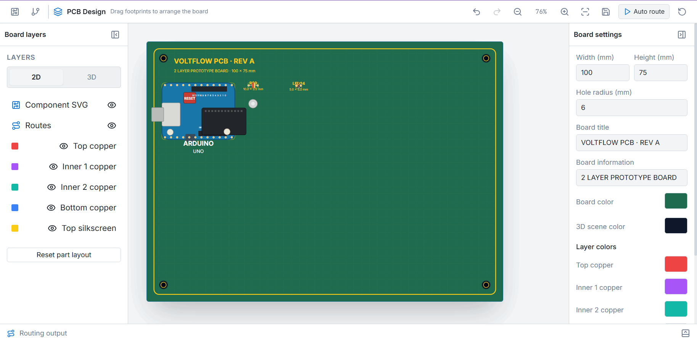
This PCB Design view shows a green prototype board with an Arduino footprint, mounting holes, silkscreen labels, and visible board dimensions. The layer panel separates component graphics, routes, copper layers, and silkscreen, while board settings control width, height, hole radius, title, colors, and prototype information. Auto route and 2D/3D controls make the next hardware step visible without leaving VoltFlow.
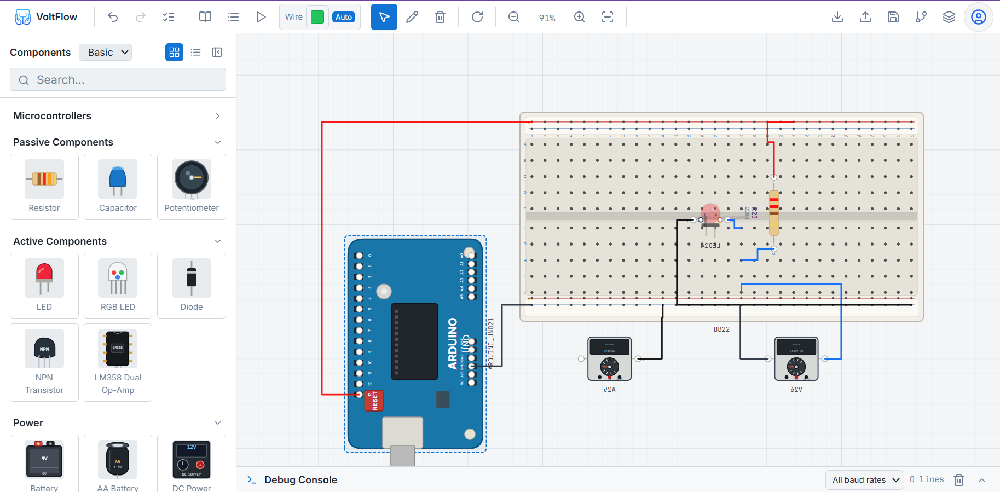
Searchable component views keep common parts close to the design. Students can learn by trying, while experienced makers can move quickly from a concept to a concrete arrangement.
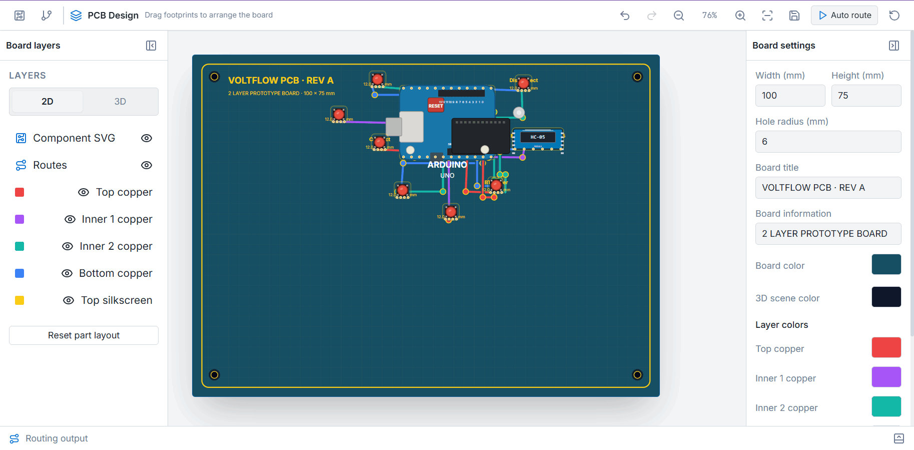
Clear wiring and component placement help teams reason about inputs, outputs, power, and control logic. That shared visual context is especially valuable when hardware and firmware work in parallel.
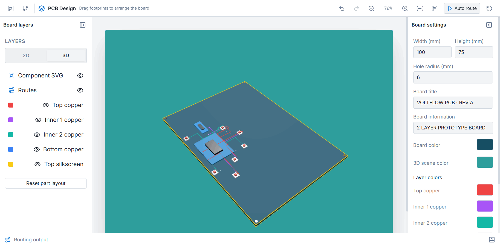
Schematic and PCB-oriented views help turn an experiment into something that can be discussed, documented, reviewed, and handed to the next stage of the build.
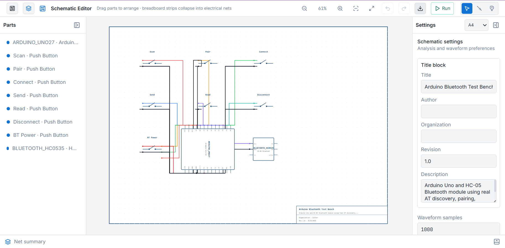
Bluetooth, GPS, and storage ideas are easier to discuss when they remain part of the same project. VoltFlow helps a connected-device concept stay connected from the start.
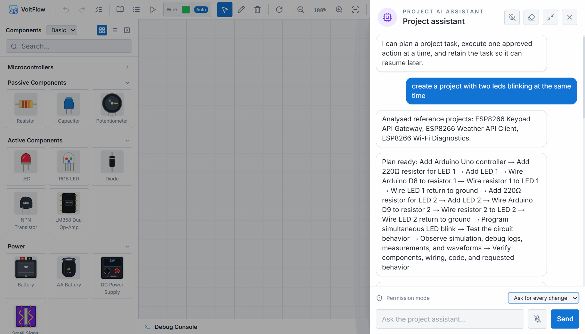
The Project AI Assistant can interpret a request such as creating two blinking LEDs, analyze relevant reference projects, and lay out a sequence of approved actions: add the controller, place resistors and LEDs, wire the pins, program the behavior, test the circuit, and inspect simulation and debug output. Permission mode keeps changes reviewable instead of making the design a black box.
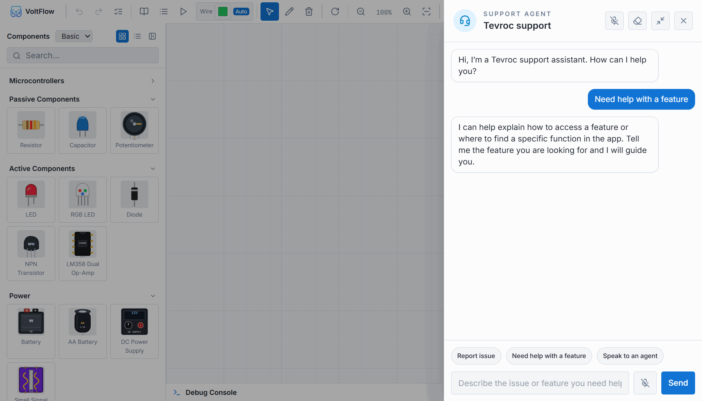
The desktop experience provides space for the canvas, component library, code, and project controls to work together without turning the design into a maze of separate windows.
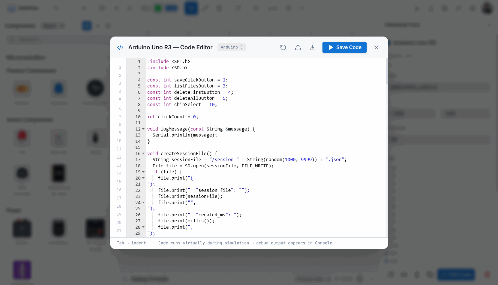
The inline editor is shown here as an Arduino Uno R3 workspace with Arduino C syntax highlighting, line numbers, SPI and SD-card includes, named button pins, session-file logic, and serial logging. Save Code, reset, import, and export actions sit in the editor header, while the footer explains that code can run virtually during simulation and send output to the console. This is the difference between a diagram tool and a practical electronics IDE.
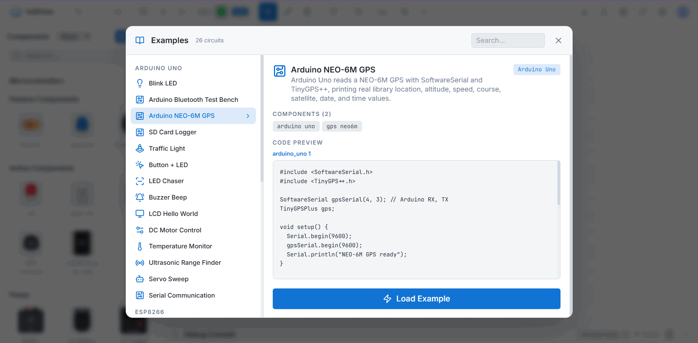
A clear desktop project view gives teammates, educators, and clients a concrete way to review the circuit, ask better questions, and understand what should happen next.
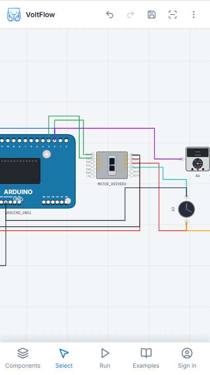
The mobile circuit view keeps a real connected design in reach: an Arduino board drives a motor-driver module while colored wires run to a control input, a meter, and a rotary component. The bottom navigation exposes Components, Select, Run, Examples, and Sign in, so a phone can remain useful for reviewing the build, opening examples, and checking the next action.
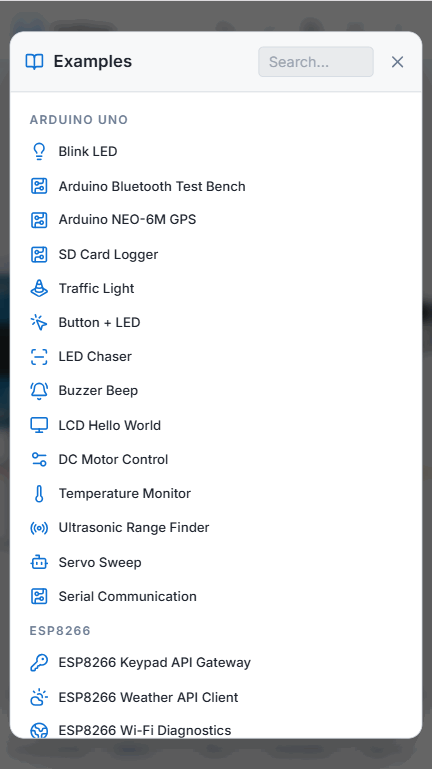
A compact screen can still keep the circuit’s purpose visible, making it easier to explain a project during a lesson, meeting, or field conversation.
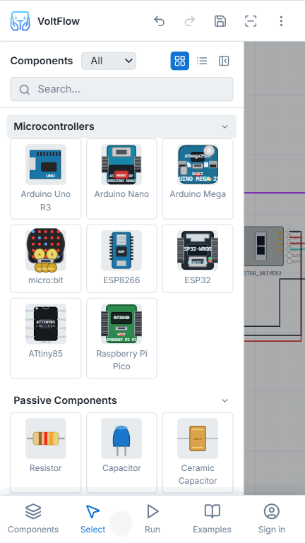
Mobile access supports the project loop beyond creation: revisit an experiment, confirm its direction, and return to the desktop with the context intact.
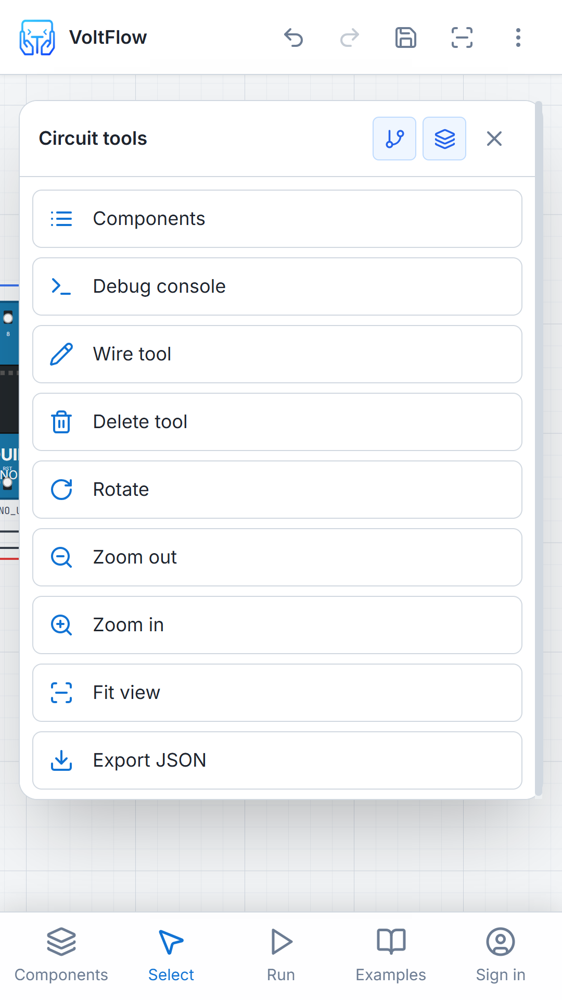
VoltFlow is designed to remain recognizable across platforms, so the move from a large workspace to a phone does not mean relearning the product.
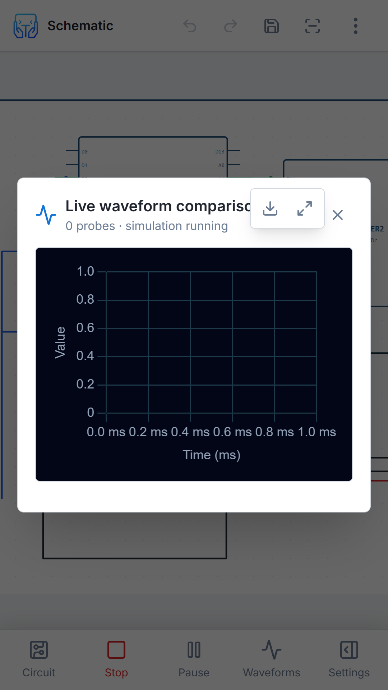
Mobile views lower the barrier to showing a circuit to a learner, teammate, or client, making electronics work easier to discuss outside a specialist lab.
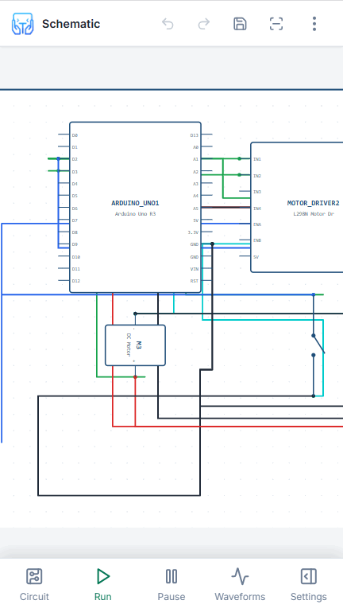
When project context is available on a mobile device, feedback from the field can return to the same design instead of being lost in disconnected notes.
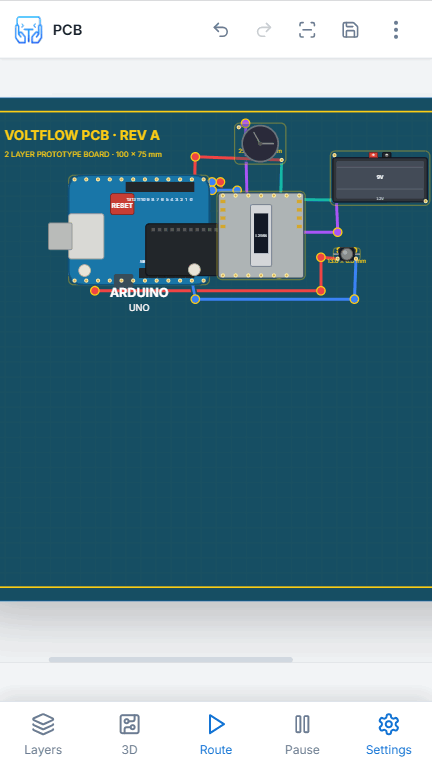
VoltFlow’s platform range supports a more flexible rhythm for makers and teams: design where the screen fits the moment, then continue the deeper work later.
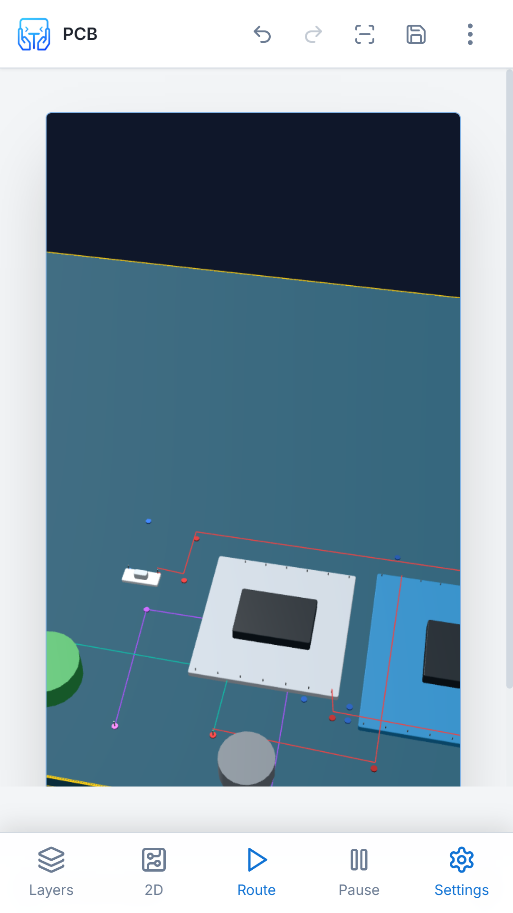
Across Web, Windows, Linux, macOS, iOS, and Android, VoltFlow is built to keep the circuit, code, and next action close at hand.
Download VoltFlow and move from components to code, simulation, connectivity, and a clearer handoff for the people who will build what comes next.